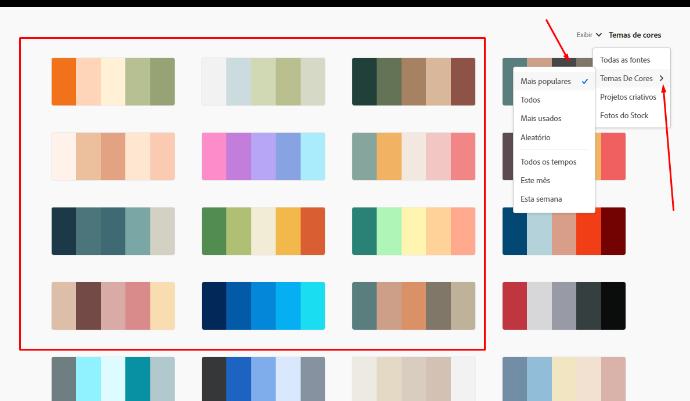
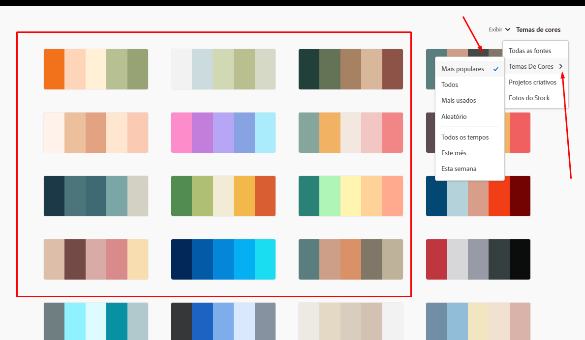

Aqui nessa aula, iremos ver o adobe color e o paletton, que nos facilita encontrar uma paleta de cores que harmoniza melhor com oque procuramos, dando facilida na hora de escollher as cores, e ainda mostra como pegar uma cor que achamos muito bonita em algum site ou imagem que temos.
 

Mostra varias paletas de cores, com varios exemplo que podem harmonizar, consegue extrair os tons de cores de imagens, e mostra as cores que são mais usadas, muito funional na hora de escolher a cor de um site AdobeColor.com
Nesse app, como vemos no adobe ele consegue fazer a harmonia das cores, mas também é possivel ver como elas ficariam em um site, ele cria esse exemplo de acordo com as cores que gostamos. Paletton.com